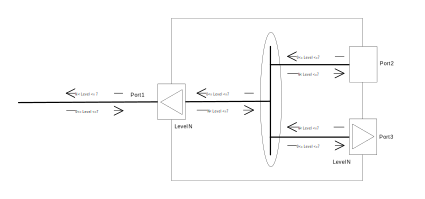

1. CFM functional description
CFM is Connectivity Fault Management as described in 802.1Q section 20.
The Microchip switch has a HW Engine that supports a range of functionality that
is related to the handling of OAM frames at both ingress and egress directions.
What is supported differs depending on the exact platform.
If a described functionality is not supported on all platforms it will be stated.
-
Creating/Deleting a Port domain MEP
-
Enable/Disable CCM PDU handling.
-
Adding/Removing Peer MEPs.
-
CCM PDU handling.
-
MEG level filtering
-
CCM Frame reception interval monitoring.
-
CCM defect (LOC) generation.
-
MEG level filtering
-
CCM Frame Transmission.
-
CCM Frame updating with RDI.
1.1. Introduction
One Down Port domain MEP can be created per bridge device (port).
The MEP will prevent any leaking of OAM PDU in and out of the MEG.
Ingress CCM frames on the configured MEG level and below will be handled by the MEP.
CCM frame will be transmitted with the configured MEG level.
This is a model of the possible MEP configuration:

First a bridge must be created and devices (ports) must be added:
ip link add name br0 type bridge ip link set dev eth0 master br0 ip link set dev eth1 master br0
The bridge is br0 with eth0 and eth1 as devices (ports)
1.2. MEP Create and Delete
This is creating a MEP instance:
cfm mep-create bridge br0 instance 10 domain port direction down port eth0
The bridge is br0.
The device (port) is eth0.
Instance number is 10.
Domain is port.
Direction is down
The MEP is in the Port domain meaning OAM frames are untagged and not related to any VLAN.
This is deleting a MEP instance:
cfm mep-delete bridge br0 instance 10
The bridge is br0.
Instance number is 10.
1.3. MEP Configuration
When a MEP is created, there are some attributes that can be configured with this command:
cfm mep-config bridge br0 instance 10 mac 00-00-00-03-00-00 level 5 mepid 8
The bridge is br0.
Instance number is 10.
MAC address of the MEP is 00-00-00-03-00-00.
MEG Level of the MEP is 5.
MEP ID of the MEP is 8.
1.4. Peer MEP Add and Remove.
When a MEP is created, Peer MEPs can be added and removed:
cfm cc-peer bridge br0 instance 10 mepid 9 cfm cc-peer bridge br0 instance 10 mepid 8
The bridge is br0.
Instance number is 10.
Peer MEP with ID 8 and 9 are added.
cfm cc-peer bridge br0 instance 10 remove 1 mepid 8
The bridge is br0.
Instance number is 10.
Peer MEP with ID 8 is removed.
1.5. MEP CC Configuration.
When a MEP is created, the Continuity Check functionality can be enabled:
cfm cc-config bridge br0 instance 10 enable 1 interval 1s domain-name ABCDEFGHIJ short-name KLMNOPQRST
The bridge is br0.
Instance number is 10.
CC is enable.
CCM Expected reception interval and transmission interval is 1s - one frame per second.
MAID Domain name is ABCDEFGHIJ.
MAID Short name is KLMNOPQRST.
The MAID Domain name can be omitted to configure MAID with no Domain name.
When CC is enabled CCM Frame reception interval is monitored for all add Peer MEPs.
When a MEP is created, the Continuity Check functionality can be disabled:
cfm cc-config bridge br0 instance 10 enable 0
The bridge is br0.
Instance number is 10.
CC is not enable.
1.6. MEP CCM transmission.
When a MEP is created, transmission of CCM frames can be enabled:
cfm cc-ccm-tx bridge br0 instance 10 dmac 01-80-C2-00-00-30 sequence 1 \
period 5 iftlv 1 iftlv-value 100 porttlv 1 porttlv-value 200
The bridge is br0.
Instance number is 10.
CCM destination MAC is 01-80-C2-00-00-30.
CCM insertion of sequence numbers is enabled.
CCM is transmitted for a period of 5 seconds
CCM insertion of Interface TLV is enabled and the value is 100.
CCM insertion of Port TLV is enabled and the value is 200.
Within 5 seconds this function must be called again in order to keep transmission alive.
When a MEP is created and transmission of CCM frames is enabled, the state of the inserted RDI can be controlled:
cfm cc-rdi bridge br0 instance 10 rdi 1"
The bridge is br0.
Instance number is 10.
CCM inserted RDI is set tp 1.
1.7. MEP and peer MEP show status.
The below command will show the status for all created MEPs on the bridge.
For each MEP it will show the status for all added Peer MEPs.
cfm mep-status-show bridge br0
CFM MEP status:
Instance 10
Opcode unexp seen 0
Version unexp seen 0
Rx level low seen 0
CFM CC peer status:
Instance 10
Peer-mep 9
CCM defect 1
Rdi 0
Port tlv 0
If tlv 0
CCM seen 0
Tlv seen 0
Seq unexp seen 0
The bridge is br0.
Instance number is 10.
Peer MEP ID is 9.
Opcode unexp seen is 1 when OAM PDU with unknown opcode is received.
Version unexp seen is 1 when OAM PDU with unknown version is received.
Rx level low seen is 1 when OAM PDU with low MEG level is received.
CCM defect is 1 when no CCM frame is received for 3,25 * CC interval.
Rdi is 1 when CCM frame is received with RDI,
Port tlv is the value of the received Port TLV value.
If tlv is the value of the received Interface TLV value.
CCM seen is 1 when CCM frame is received.
Tlv seen is 1 when CCM frame with TLV is received.
Seq unexp seen is 1 when CCM frame with an unexpected sequence number is received.
All status named "seen" will be cleared when the command is called.